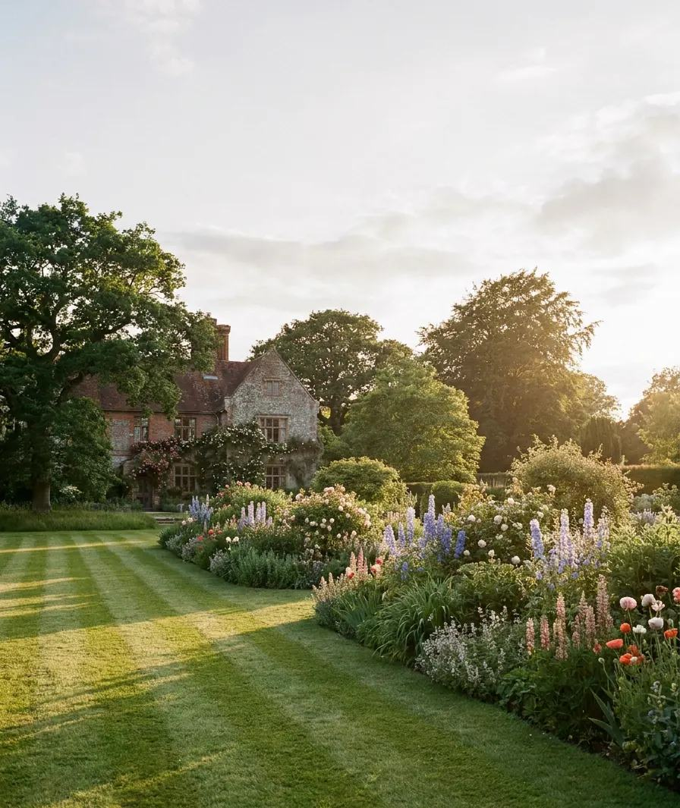
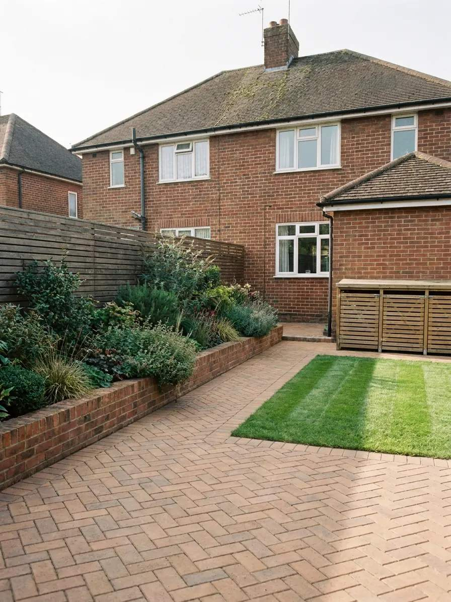
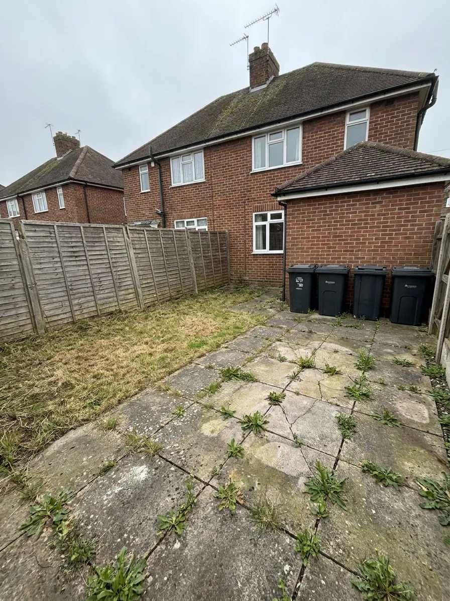
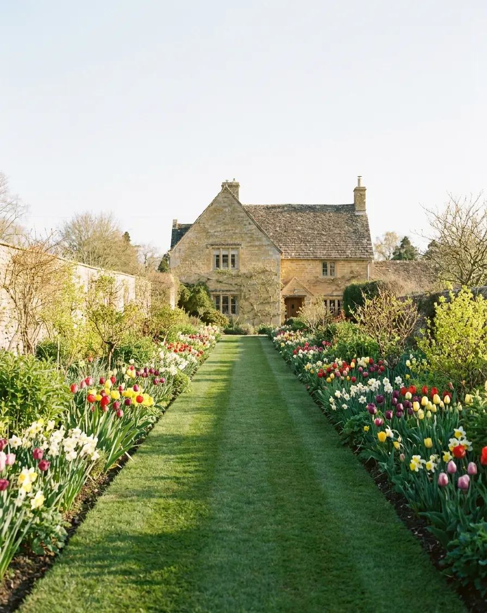
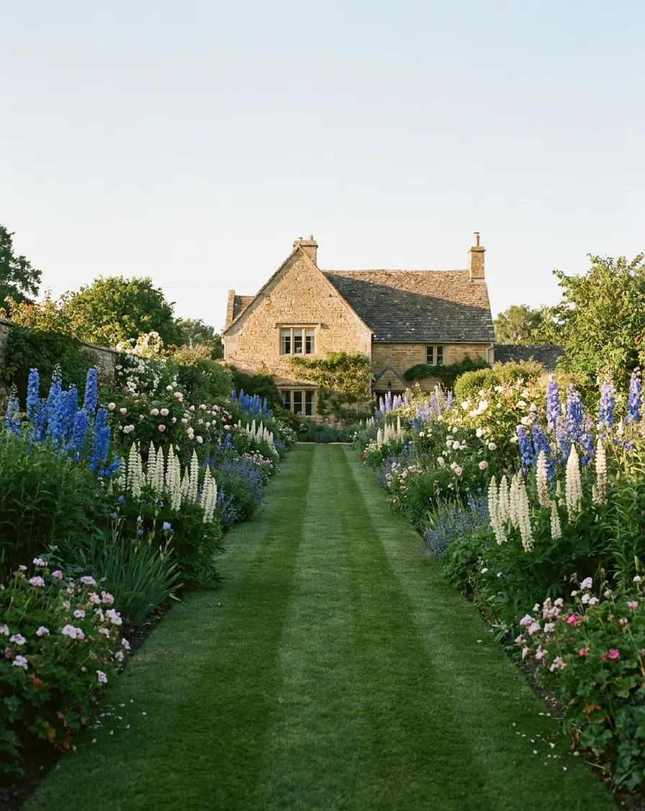
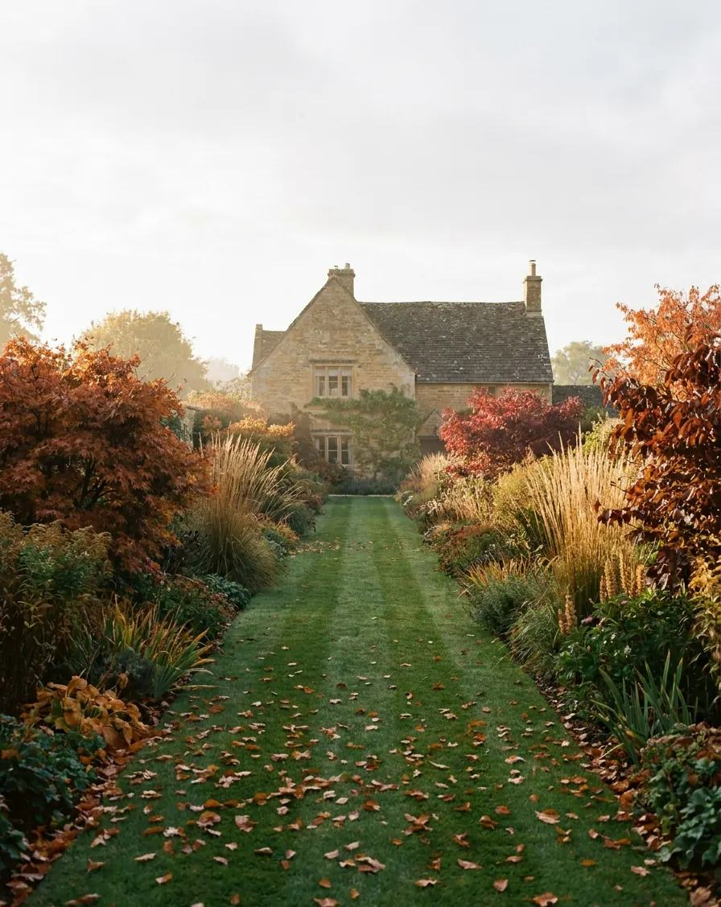
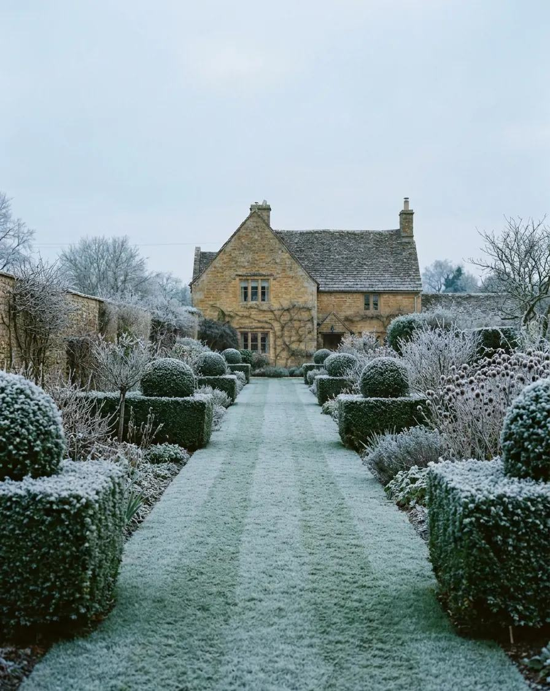
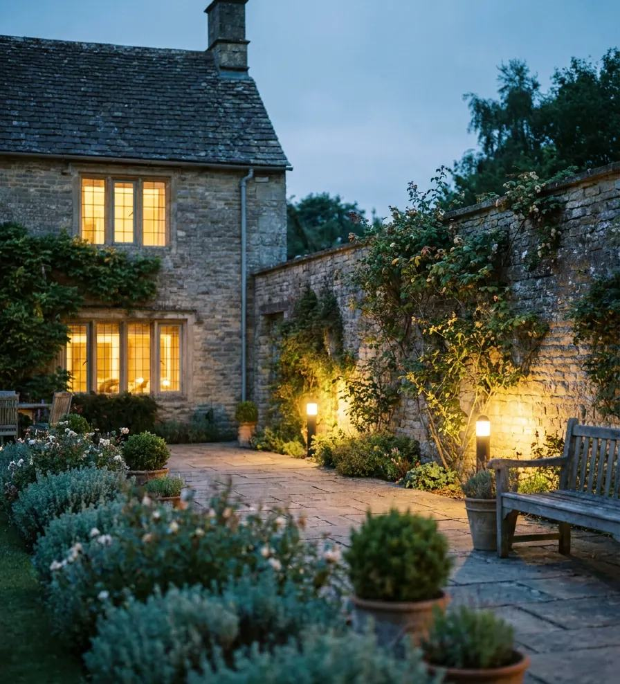

we walk it with you
An hour in the garden and no clipboard. Where the sun lands, where the water sits, which corner you already avoid. You get honest ideas on the day and a fixed price within the week.
Design, build and planting for gardens across Surrey and West Sussex. Made to look right the year it grows in.
Landscape gardeners since 2009

Every stage is done by people on our own payroll. No subcontracted crew you have never met.
Cracked slabs, a strip of dead lawn and four bins against the wall in Cranleigh, photographed the morning of the survey. The same view twenty months later, after one full season in the borders.
Drag the handle






planted for all four of them
Borders at full height, the lawn striped, and the terrace warm until nine. This is the month the drawings were aimed at.
An hour in the garden and no clipboard. Where the sun lands, where the water sits, which corner you already avoid. You get honest ideas on the day and a fixed price within the week.
Planting plans and elevations before anything is lifted, so you approve a garden rather than a quote. Our own team does the building, and the site stays tidy and usable the whole way through.
A garden is not finished on handover day. We return through the first year, feeding, shaping and replacing anything that sulks, until it looks the way the drawings said it would.
They did not just tidy it up. They gave us a room we did not have before, and we have eaten outside from April to October ever since.
No obligation, no clipboard
An hour of honest ideas about your outside space, and a fixed price within the week. Whether you build it with us or not.
Book a garden walk